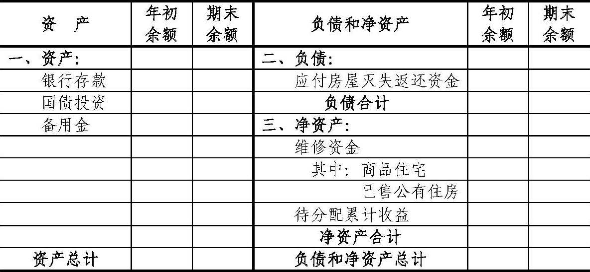
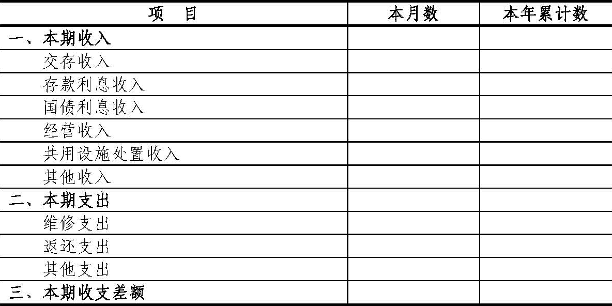
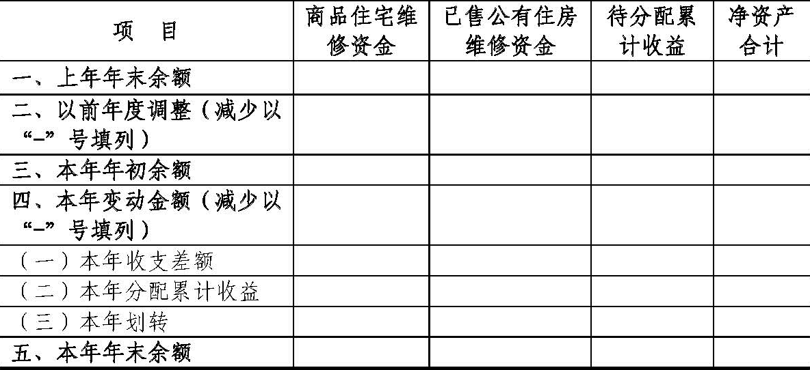

财政部
关于印发《住宅专项维修资金会计核算办法》的通知
财会〔2020〕7号
住房城乡建设部，各省、自治区、直辖市、计划单列市财政厅（局），新疆生产建设兵团财政局，有关单位：
为了规范住宅专项维修资金的会计核算，保证会计信息质量，根据《中华人民共和国会计法》、《物业管理条例》、《住宅专项维修资金管理办法》等法律法规，我们制定了《住宅专项维修资金会计核算办法》（以下简称《办法》），现予印发，自2021年1月1日起施行。
单位在首次执行日，应当按照《办法》的规定设立新账，将原账资产、负债和净资产会计科目期末余额进行重分类后转入新账相关会计科目，并基于《办法》的核算基础对新账相关会计科目期初余额进行调整。执行《办法》的首个报告年度无需编制上年比较财务报表。
执行中有何问题，请及时反馈我部。
附件：住宅专项维修资金会计核算办法
财政部
2020年4月20日
附件：
住宅专项维修资金会计核算办法
第一部分 总说明
一、为了规范住宅专项维修资金的会计核算，保证会计信息质量，根据《中华人民共和国会计法》、《物业管理条例》、《住宅专项维修资金管理办法》等法律法规，制定本办法。
二、本办法所称住宅专项维修资金，是指《住宅专项维修资金管理办法》规定的专项用于住宅共用部位、共用设施设备保修期满后的维修和更新、改造的资金。
三、《住宅专项维修资金管理办法》规定的代管机构和管理机构（以下统称代管机构）负责管理的住宅专项维修资金的会计核算依照本办法执行。
已划转至业主大会管理的住宅专项维修资金，可参照执行本办法。
四、住宅专项维修资金应当作为独立的会计主体进行会计核算。
五、代管机构应当将其管理的住宅专项维修资金按照商品住宅、已售公有住房分别建账、分别核算。确需合并建账的，应当在有关会计科目下按照商品住宅和已售公有住房进行明细核算。
六、住宅专项维修资金的会计核算采用收付实现制，但按照本办法规定应当采用权责发生制的除外。
七、住宅专项维修资金的会计要素包括资产、负债、净资产、收入和支出。
八、住宅专项维修资金的会计记账采用借贷记账法。
九、住宅专项维修资金的会计核算应当划分会计期间，分期结算账目和编制财务报表。会计期间的起讫日期采用公历制。
十、住宅专项维修资金的会计核算应当遵循下列基本原则：
（一）住宅专项维修资金的会计核算应当以实际发生的经济业务为依据，如实反映住宅专项维修资金的财务状况和收支情况等信息，保证会计信息真实可靠、内容完整。
（二）住宅专项维修资金的会计核算应当采用规定的会计政策，确保会计信息口径一致、相互可比。
（三）住宅专项维修资金的会计核算应当及时进行，不得提前或者延后。
十一、代管机构对住宅专项维修资金应当按照下列规定运用会计科目：
（一）代管机构应当按照本办法的规定设置和使用会计科目。
（二）代管机构应当执行本办法统一规定的会计科目编号，以便于填制会计凭证、登记账簿、查阅账目，实行会计信息化管理。
（三）代管机构在填制会计凭证、登记会计账簿时，应当填列会计科目的名称，或者同时填列会计科目的名称和编号，不得只填列会计科目编号、不填列会计科目名称。
（四）代管机构可以根据核算和管理工作需要，对明细科目设置予以补充，但不得违反本办法的规定。
十二、代管机构应当按照下列规定编制住宅专项维修资金财务报表：
（一）住宅专项维修资金可以区分商品住宅、已售公有住房分别编制财务报表，具备会计核算条件的还可以按小区或幢编制财务报表。
（二）住宅专项维修资金财务报表包括资产负债表、收支表、净资产变动表及附注。
（三）住宅专项维修资金财务报表应当按照月度和年度编制。
（四）住宅专项维修资金财务报表应当根据登记完整、核对无误的账簿记录和其他有关资料编制，做到数字真实、计算准确、内容完整、编报及时。
十三、住宅专项维修资金相关会计基础工作、会计档案管理以及内部控制等，应当按照《中华人民共和国会计法》、《会计基础工作规范》、《会计档案管理办法》及国家有关内部控制规范等相关法律法规规定执行。
住宅专项维修资金相关会计信息化工作，应当符合财政部制定的相关会计信息化工作规范和标准，确保利用现代信息技术手段开展会计核算及生成的会计信息符合本办法的规定。
十四、本办法自2021年1月1日起施行。
第二部分 会计科目名称和编号
第三部分 会计科目使用说明
一、资产类
1001 银行存款
一、本科目核算住宅专项维修资金按规定存入维修资金专户的各种存款。
二、本科目可以根据实际情况按照开户银行、存款种类、存储期限等进行明细核算。
三、银行存款的主要账务处理如下：
（一）将款项存入维修资金专户，按照实际存入的金额，借记本科目，贷记“交存收入”、“经营收入”、“共用设施处置收入”、“国债投资”等科目。
（二）收到银行存款利息，按照实际收到的金额，借记本科目，贷记“存款利息收入”科目。
（三）收到分期付息的国债利息，按照实际收到的利息金额，借记本科目，贷记“国债利息收入”科目。
（四）以银行存款支付相关款项，按照实际支付的金额，借记“维修支出”、“返还支出”、“应付房屋灭失返还资金”等科目，贷记本科目。
（五）退回本年交存的住宅专项维修资金，按照实际退回的金额，借记“交存收入”科目，贷记本科目。退回以前年度多交的住宅专项维修资金，按照实际退回的金额，借记“商品住宅维修资金”、“已售公有住房维修资金”科目，贷记本科目。
（六）收到维修单位退回本年的维修支出，按照实际收到的金额，借记本科目，贷记“维修支出”科目。收到维修单位退回以前年度的维修支出，按照实际收到的金额，借记本科目，贷记“商品住宅维修资金”、“已售公有住房维修资金”科目。
（七）将住宅专项维修资金划转至业主大会等管理，按照实际划转转出的金额，借记“商品住宅维修资金”、“已售公有住房维修资金”等科目，贷记本科目。划转转入住宅专项维修资金的，做相反会计分录。
四、本科目应当按照开户银行、存款种类等，分别设置“银行存款日记账”，由出纳人员根据收付款凭证，按照业务的发生顺序逐笔登记，每日终了应结出余额。“银行存款日记账”应定期与“银行对账单”核对，至少每月核对一次。月度终了，银行存款日记账账面余额与银行对账单余额之间如有差额，应当逐笔查明原因并进行处理，按月编制“银行存款余额调节表”，调节相符。
五、本科目期末借方余额，反映住宅专项维修资金实际存放在维修资金专户的款项。
1101 国债投资
一、本科目核算住宅专项维修资金按规定购入国债的成本。
二、本科目应当按照国债的种类进行明细核算。
三、国债投资的主要账务处理如下：
（一）按规定购买国债，按照实际支付的金额（包括购买价款以及税金、手续费等相关税费），借记本科目，贷记“银行存款”科目。
（二）到期收回国债本息，按照实际收回或收到的金额，借记“银行存款”科目，按照债券账面余额，贷记本科目，按照其差额，贷记“国债利息收入”科目。
四、本科目期末借方余额，反映住宅专项维修资金持有的国债购入成本。
1201 备用金
一、本科目核算代管机构拨付给分支机构的备用金。
实行备用金制度的代管机构设置和使用本科目。
二、分支机构使用备用金以后应当及时报销并补足备用金。
三、备用金的主要账务处理如下：
（一）代管机构核定并向分支机构拨付备用金，按照实际拨付的金额，借记本科目，贷记“银行存款”科目。
（二）代管机构根据分支机构报销数补足备用金定额，按照实际报销的金额，借记“维修支出”、“返还支出”等科目，贷记“银行存款”科目。除了增加或减少拨付的备用金外，使用和报销备用金时不再通过本科目核算。
（三）代管机构收回备用金，按照实际收回的金额，借记“银行存款”科目，贷记本科目。
四、本科目期末借方余额，反映代管机构拨付给分支机构的备用金。
二、负债类
2001 应付房屋灭失返还资金
一、本科目核算房屋灭失后，按规定应返还业主、售房单位或上缴国库的住宅专项维修资金。
二、本科目可按照返还的对象进行明细核算。
三、应付房屋灭失返还资金的主要账务处理如下：
（一）房屋灭失，按规定应将住宅专项维修资金返还业主、售房单位或上缴国库的，按照应返还的金额，借记“返还支出”科目，贷记本科目。
（二）支付房屋灭失返还资金，按照实际支付的金额，借记本科目，贷记“银行存款”科目。
四、本科目期末贷方余额，反映应当支付但尚未支付的房屋灭失返还资金。
三、净资产类
3001 商品住宅维修资金
一、本科目核算商品住宅应明确到户的住宅专项维修资金。
二、本科目可按照小区、幢、房屋户门号等进行明细核算或辅助核算。
三、商品住宅维修资金的主要账务处理如下：
（一）期末，将“交存收入”、“经营收入”、“共用设施处置收入”科目的本期发生额转入商品住宅维修资金，借记“交存收入”、“经营收入”、“共用设施处置收入”科目，贷记本科目；将“维修支出”、“返还支出”科目的本期发生额转入商品住宅维修资金，借记本科目，贷记“维修支出”、“返还支出”科目。
（二）按规定将待分配累计收益转入商品住宅维修资金（如将利息分配到户等），按照转入的金额，借记“待分配累计收益”科目，贷记本科目。
（三）退回以前年度多交的商品住宅维修资金，按照实际退回的金额，借记本科目，贷记“银行存款”科目。
（四）收到维修单位退回以前年度的维修支出，按照实际收到的金额，借记“银行存款”科目，贷记本科目。
（五）将商品住宅维修资金划转至业主大会等管理，按照实际划转转出的金额，借记本科目，贷记“银行存款”科目。划转转入商品住宅维修资金的，做相反会计分录。
四、本科目期末贷方余额，反映商品住宅应明确到户的住宅专项维修资金的结余。
3002 已售公有住房维修资金
一、本科目核算已售公有住房应明确到户或幢的住宅专项维修资金。
二、本科目应当设置“售房单位”、“业主”明细科目，并可在“售房单位”明细科目下按照具体单位进行明细核算或辅助核算。本科目可按照小区、幢、房屋户门号等进行明细核算或辅助核算。
三、已售公有住房维修资金的主要账务处理如下：
（一）期末，将“交存收入”、“经营收入”、“共用设施处置收入”科目的本期发生额转入已售公有住房维修资金，借记“交存收入”、“经营收入”、“共用设施处置收入”科目的相关明细科目，贷记本科目的相关明细科目；将“维修支出”、“返还支出”科目的本期发生额转入已售公有住房维修资金，借记本科目的相关明细科目，贷记“维修支出”、“返还支出”科目的相关明细科目。
（二）按规定将待分配累计收益转入已售公有住房维修资金（如将利息分配到户或幢等），按照转入的金额，借记“待分配累计收益”科目，贷记本科目。
（三）退回以前年度多交的已售公有住房维修资金，按照实际退回的金额，借记本科目，贷记“银行存款”科目。
（四）收到维修单位退回以前年度的维修支出，按照实际收到的金额，借记“银行存款”科目，贷记本科目。
（五）将已售公有住房维修资金划转至业主大会等管理，按照实际划转转出的金额，借记本科目，贷记“银行存款”科目。划转转入已售公有住房维修资金的，做相反会计分录。
四、本科目期末贷方余额，反映已售公有住房应明确到户或幢的住宅专项维修资金的结余。
3101 待分配累计收益
一、本科目核算住宅专项维修资金尚未分配到商品住宅或已售公有住房维修资金的累计收益。
二、待分配累计收益的主要账务处理如下：
（一）期末，将“存款利息收入”、“国债利息收入”、“其他收入”科目的本期发生额转入待分配累计收益，借记“存款利息收入”、“国债利息收入”、“其他收入”科目，贷记本科目；将“其他支出”科目的本期发生额转入待分配累计收益，借记本科目，贷记“其他支出”科目。
（二）按规定将待分配累计收益转入商品住宅或已售公有住房维修资金（如将利息分配到户或幢等），借记本科目，贷记“商品住宅维修资金”、“已售公有住房维修资金”科目。
三、本科目期末贷方余额，反映住宅专项维修资金尚未分配到商品住宅或已售公有住房维修资金的累计收益。
四、收入类
4001 交存收入
一、本科目核算业主、公有住房售房单位等按规定交存的住宅专项维修资金收入。
二、在核算已售公有住房时，本科目应当设置“售房单位”、“业主”明细科目，并在“售房单位”明细科目下按照具体单位进行明细核算。
本科目可按照所归属的小区、幢、房屋户门号等进行明细核算或辅助核算。
三、交存收入的主要账务处理如下：
（一）收到业主等交存的属于业主所有的维修资金，按照实际收到的金额，借记“银行存款”科目，贷记本科目（业主）。
收到公有住房售房单位交存的从售房款中一次性提取的住宅专项维修资金，按照实际收到的金额，借记“银行存款”科目，贷记本科目（售房单位）。
（二）退回本年交存的住宅专项维修资金，按照实际退回的金额，借记本科目，贷记“银行存款”科目。
（三）期末，将本科目本期发生额转入商品住宅或已售公有住房维修资金，借记本科目，贷记“商品住宅维修资金”、“已售公有住房维修资金”科目。
四、期末结转后，本科目应无余额。
4101 存款利息收入
一、本科目核算住宅专项维修资金取得的银行存款利息收入。
二、存款利息收入的主要账务处理如下：
（一）收到银行存款利息，按照实际收到的利息金额，借记“银行存款”科目，贷记本科目。
（二）期末，将本科目本期发生额转入待分配累计收益，借记本科目，贷记“待分配累计收益”科目。
三、期末结转后，本科目应无余额。
4102 国债利息收入
一、本科目核算住宅专项维修资金购买国债取得的利息收入。
二、国债利息收入的主要账务处理如下：
（一）收到分期付息的国债利息，按照实际收到的利息金额，借记“银行存款”科目，贷记本科目。
（二）到期收回国债本息，按照实际收回或收到的金额，借记“银行存款”科目，按照债券账面余额，贷记“国债投资”科目，按照其差额，贷记本科目。
（三）期末，将本科目本期发生额转入待分配累计收益，借记本科目，贷记“待分配累计收益”科目。
三、期末结转后，本科目应无余额。
4201 经营收入
一、本科目核算按规定转入住宅专项维修资金的，利用住宅共用部位、共用设施设备进行经营的业主所得收益。
二、经营收入的主要账务处理如下：
（一）按规定转入利用住宅共用部位、共用设施设备进行经营的业主所得收益，按照实际转入的金额，借记“银行存款”科目，贷记本科目。
（二）期末，将本科目本期发生额转入商品住宅或已售公有住房维修资金，借记本科目，贷记“商品住宅维修资金”、“已售公有住房维修资金”科目。
三、期末结转后，本科目应无余额。
4301 共用设施处置收入
一、本科目核算按规定转入住宅专项维修资金的，住宅共用设施设备报废后回收的残值收入。
按规定转入住宅专项维修资金的住宅共用部位的拆迁补偿款，也通过本科目核算。
二、共用设施处置收入的主要账务处理如下：
（一）按规定转入住宅共用设施设备报废后回收的残值收入、住宅共用部位的拆迁补偿款等，按照实际转入的金额，借记“银行存款”科目，贷记本科目。
（二）期末，将本科目本期发生额转入商品住宅或已售公有住房维修资金，借记本科目，贷记“商品住宅维修资金”、“已售公有住房维修资金”科目。
三、期末结转后，本科目应无余额。
4901 其他收入
一、本科目核算住宅专项维修资金取得的除交存收入、存款利息收入、国债利息收入、经营收入、共用设施处置收入以外的各项收入。
二、其他收入的主要账务处理如下：
（一）收到其他收入，按照实际收到的金额，借记“银行存款”科目，贷记本科目。
（二）期末，将本科目本期发生额转入待分配累计收益，借记本科目，贷记“待分配累计收益”科目。
三、期末结转后，本科目应无余额。
五、支出类
5001 维修支出
一、本科目核算将住宅专项维修资金用于住宅共用部位、共用设施设备保修期满后的维修和更新、改造的支出。
维修和更新、改造过程中发生的相关税费支出，也通过本科目核算。
二、在核算已售公有住房时，本科目应当设置“售房单位”、“业主”明细科目，并在“售房单位”明细科目下按照具体单位进行明细核算。
本科目可按照支出的类别以及分摊的小区、幢、房屋户门号等进行明细核算或辅助核算。
三、维修支出的主要账务处理如下：
（一）使用住宅专项维修资金进行维修和更新、改造，按照实际支付的金额，借记本科目，贷记“银行存款”科目。
（二）收到维修单位退回本年的维修支出，按照实际收到的金额，借记“银行存款”科目，贷记本科目。
（三）期末，将本科目本期发生额转入商品住宅或已售公有住房维修资金，借记“商品住宅维修资金”、“已售公有住房维修资金”科目，贷记本科目。
四、期末结转后，本科目应无余额。
5101 返还支出
一、本科目核算因业主退房、房屋灭失将住宅专项维修资金返还业主、售房单位等的支出。
二、在核算已售公有住房时，本科目应当设置“售房单位”、“业主”明细科目，并在“售房单位”明细科目下按照具体单位进行明细核算。
本科目可按照所归属的小区、幢、房屋户门号等进行明细核算或辅助核算。
三、返还支出的主要账务处理如下：
（一）因业主退房退回以前年度交存的住宅专项维修资金，按照实际退回的金额，借记本科目，贷记“银行存款”科目。
（二）房屋灭失，按规定应将住宅专项维修资金返还业主、售房单位或上缴国库的，按照应返还的金额，借记本科目，贷记“应付房屋灭失返还资金”科目。
（三）期末，将本科目本期发生额转入商品住宅或已售公有住房维修资金，借记“商品住宅维修资金”、“已售公有住房维修资金”科目，贷记本科目。
四、期末结转后，本科目应无余额。
5901 其他支出
一、本科目核算住宅专项维修资金发生的除维修支出、返还支出以外的各项支出。
二、本科目应当按照支出的类别进行明细核算。
三、其他支出的主要账务处理如下：
（一）发生其他支出，按照实际支出的金额，借记本科目，贷记“银行存款”科目。
（二）期末，将本科目本期发生额转入待分配累计收益，借记“待分配累计收益”科目，贷记本科目。
四、期末结转后，本科目应无余额。
第四部分 财务报表格式
资产负债表
| 资金名称：XX住宅专项维修资金 | 会住维01表 |
| 编制单位：＿＿＿＿ | ＿＿＿＿年＿＿月＿＿日 | 单位：元 |
|

|
收支表
| 资金名称：XX住宅专项维修资金 | 会住维02表 |
| 编制单位：＿＿＿＿ | ＿＿＿＿年＿＿月 | 单位：元 |
|

|
净资产变动表
| 资金名称：XX住宅专项维修资金 | 会住维03表 |
| 编制单位：＿＿＿＿ | ＿＿＿＿年 | 单位：元 |
|

|
| 注：不同时管理商品住宅和已售公有住房维修资金的，不设置非适用维修资金相关栏目。 |
第五部分 财务报表编制说明
一、资产负债表编制说明
（一）本表反映住宅专项维修资金在某一特定日期全部资产、负债和净资产的情况。
（二）本表“年初余额”栏内各项数字，应当根据上年年末资产负债表“期末余额”栏内数字填列。
如果本年度发生了调整以前年度净资产的事项，还应当对“年初余额”栏中的有关项目金额进行相应调整。
（三）本表中“资产总计”项目期末（年初）余额应当与“负债和净资产总计”项目期末（年初）余额相等。
（四）本表“期末余额”栏各项目的内容和填列方法如下：
1.“银行存款”项目，反映住宅专项维修资金期末存款余额。本项目应当根据“银行存款”科目期末借方余额填列。
2.“国债投资”项目，反映住宅专项维修资金期末持有的国债的账面余额。本项目应当根据“国债投资”科目期末借方余额填列。
3.“备用金”项目，反映期末代管机构拨付给分支机构的备用金。本项目应当根据“备用金”科目期末借方余额填列。
4.“资产总计”项目，反映住宅专项维修资金期末资产的合计数。本项目应当根据本表中“银行存款”、“国债投资”、“备用金”项目金额的合计数填列。
5.“应付房屋灭失返还资金”项目，反映房屋灭失后，按规定应返还业主、售房单位或上缴国库但尚未支付的住宅专项维修资金。本项目应当根据“应付房屋灭失返还资金”科目期末贷方余额填列。
6.“负债合计”项目，反映住宅专项维修资金期末负债的合计数。本项目应当根据本表中“应付房屋灭失返还资金”项目金额填列。
7.“维修资金”项目，反映期末应明确到户或幢的住宅专项维修资金的结余。本项目应当根据“商品住宅维修资金”和“已售公有住房维修资金”科目期末贷方余额的合计数填列。
本项目下“商品住宅”项目反映期末商品住宅应明确到户的住宅专项维修资金的结余，应当根据“商品住宅维修资金”科目期末贷方余额填列。
本项目下“已售公有住房”项目反映期末已售公有住房应明确到户或幢的住宅专项维修资金的结余，应当根据“已售公有住房维修资金”科目期末贷方余额填列。
8.“待分配累计收益”项目，反映住宅专项维修资金期末尚未分配的累计收益。本项目应根据“待分配累计收益”科目期末贷方余额填列。
9.“净资产合计”项目，反映住宅专项维修资金期末净资产的合计数。本项目应当根据本表中“维修资金”、“待分配累计收益”项目金额的合计数填列。
10.“负债和净资产总计”项目，反映住宅专项维修资金期末负债和净资产的合计数。本项目应当根据本表中“负债合计”、“净资产合计”项目金额的合计数填列。
二、收支表编制说明
（一）本表反映住宅专项维修资金在某一会计期间（月度、年度）内发生的收入、支出及当期收支差额情况。
（二）本表“本月数”栏反映各项目的本月实际发生数。编制年度收支表时，应当将本栏改为“本年数”，反映本年度各项目的实际发生数。
本表“本年累计数”栏反映各项目自年初至报告期期末的累计实际发生数。编制年度收支表时，应当将本栏改为“上年数”，反映上年度各项目的实际发生数，“上年数”栏应当根据上年年度收支表中“本年数”栏内所列数字填列。
（三）本表“本月数”栏各项目的内容和填列方法如下：
1.“本期收入”项目，反映住宅专项维修资金本期收入总额。本项目应当根据本表中“交存收入”、“存款利息收入”、“国债利息收入”、“经营收入”、“共用设施处置收入”、“其他收入”项目金额的合计数填列。
2.“交存收入”项目，反映本期业主、公有住房售房单位等按规定交存的住宅专项维修资金收入总额。本项目应当根据“交存收入”科目的本期发生额填列。
3.“存款利息收入”项目，反映本期住宅专项维修资金取得的银行存款利息收入。本项目应当根据“存款利息收入”科目的本期发生额填列。
4.“国债利息收入”项目，反映本期住宅专项维修资金购买国债取得的利息收入。本项目应当根据“国债利息收入”科目的本期发生额填列。
5.“经营收入”项目，反映本期按规定转入住宅专项维修资金的，利用住宅共用部位、共用设施设备进行经营的业主所得收益。本项目应当根据“经营收入”科目的本期发生额填列。
6.“共用设施处置收入”项目，反映本期按规定转入住宅专项维修资金的，住宅共用设施设备报废后回收的残值收入和住宅共用部位的拆迁补偿款。本项目应当根据“共用设施处置收入”科目的本期发生额填列。
7.“其他收入”项目，反映本期住宅专项维修资金取得的除以上收入项目外的其他收入的总额。本项目应当根据“其他收入”科目的本期发生额填列。
8.“本期支出”项目，反映本期住宅专项维修资金支出总额。本项目应当根据本表中“维修支出”、“返还支出”、“其他支出”项目金额的合计数填列。
9.“维修支出”项目，反映本期使用住宅专项维修资金，用于住宅共用部位、共用设施设备保修期满后的维修和更新、改造的支出。本项目应当根据“维修支出”科目的本期发生额填列。
10.“返还支出”项目，反映本期因业主退房、房屋灭失将住宅专项维修资金返还业主、售房单位等的支出。本项目应当根据“返还支出”科目的本期发生额填列。
11.“其他支出”项目，反映本期住宅专项维修资金发生的除以上支出项目外的其他支出的总额。本项目应当根据“其他支出”科目的本期发生额填列。
12.“本期收支差额”项目，反映本期住宅专项维修资金收入扣除支出后的净额。本项目应当根据本表中“本期收入”项目金额减去“本期支出”项目金额后的差额填列；如为负数，以“-”号填列。
三、净资产变动表编制说明
（一）本表反映住宅专项维修资金在某一会计年度内净资产项目的变动情况。
（二）本表各项目的内容和填列方法如下：
1.“上年年末余额”行，反映住宅专项维修资金净资产各项目上年年末的余额。本行各项目应当根据“商品住宅维修资金”、“已售公有住房维修资金”、“待分配累计收益”科目上年年末余额填列。
2.“以前年度调整”行，反映退回以前年度多交的住宅专项维修资金，以及收到维修单位退回以前年度的维修支出等事项对净资产进行调整的金额。本行各项目应当根据“商品住宅维修资金”、“已售公有住房维修资金”、“待分配累计收益”科目的相关信息分析填列，如为减少以“-”号填列。
3.“本年年初余额”行，反映经过以前年度调整后，住宅专项维修资金净资产各项目的本年年初余额。本行各项目应当根据其各自在“上年年末余额”、“以前年度调整”行对应项目金额的合计数填列。
4.“本年变动金额”行，反映住宅专项维修资金净资产各项目本年变动总金额。本行“商品住宅维修资金”、“已售公有住房维修资金”、“待分配累计收益”项目应当根据其各自在“本年收支差额”、“本年分配累计收益”、“本年划转”行对应项目金额的合计数填列。
5.“本年收支差额”行，反映住宅专项维修资金本年发生的收入、支出对净资产的影响。本行“商品住宅维修资金”、“已售公有住房维修资金”项目，应当分别根据本年由“交存收入”、“经营收入”、“共用设施处置收入”、“维修支出”、“返还支出”科目转入“商品住宅维修资金”、“已售公有住房维修资金”科目的金额填列，如为减少以“-”号填列。本行“待分配累计收益”项目，应当根据本年由“存款利息收入”、“国债利息收入”、“其他收入”、“其他支出”科目转入“待分配累计收益”科目的金额填列。
6.“本年分配累计收益”行，反映本年按规定将待分配累计收益转入商品住宅或已售公有住房维修资金对净资产的影响。本行“商品住宅维修资金”、“已售公有住房维修资金”、“待分配累计收益”项目应当分别根据从“待分配累计收益”科目转入“商品住宅维修资金”、“已售公有住房维修资金”科目的金额分析填列；本行“待分配累计收益”项目以“-”号填列。
7.“本年划转”行，反映本年划转住宅专项维修资金对净资产的影响。本行各项目应当根据“商品住宅维修资金”、“已售公有住房维修资金”、“待分配累计收益”科目的相关信息分析填列，如为减少以“-”号填列。
8.“本年年末余额”行，反映住宅专项维修资金本年各净资产项目的年末余额。本行各项目应当根据其各自在“本年年初余额”、“本年变动金额”行对应项目金额的合计数填列。
9.本表各行“净资产合计”项目，应当根据所在行“商品住宅维修资金”、“已售公有住房维修资金”、“待分配累计收益”项目金额的合计数填列。
四、附注
附注是住宅专项维修资金财务报表的重要组成部分，由代管机构根据住宅专项维修资金相关管理和财务制度要求编制，所披露的信息应当包括但不限于：
（一）财务报表列示的重要项目的进一步说明，包括其主要构成、增减变动情况等。
（二）其他支出的具体类别和相应的金额。
（三）未能在财务报表中列示项目的说明。
（四）国家政策和会计政策变动对财务报表影响的说明。
（五）其他对财务报表数据有重大影响的事项说明。